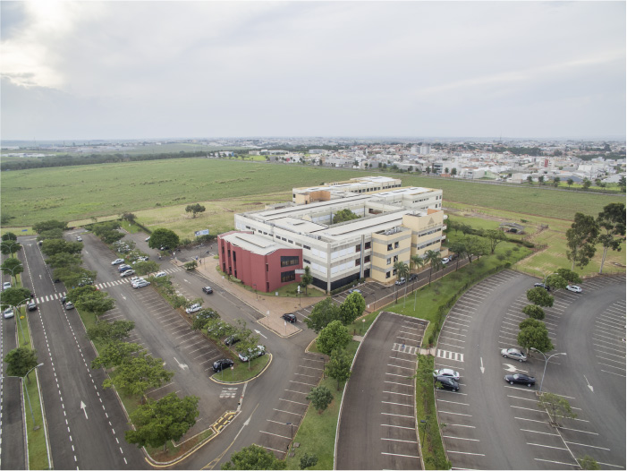
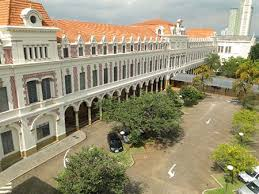

O centro Universitário de São Paulo - Unisal faz parte de mais de 90 instituições Universitárias Salesianas(IUS)
presentes em 21 paises nos 5 continentes do mundo.
No Brasil há seis Inspetorias salesianas (unidades
administrativas que coordenam as atividades regionais).
| Unidades Unisal | CAMPINAS | AMERICANA | LORENA |
|---|---|---|---|
|
 |  |